Kriging Espacial
Estadistica espacial
Introduccion
#distancia euclidiana #convertir a coordenadas planas #Kriging #Mapa de cundinamarca # Grafica
Contaminación del Aire
Los problemas asociados a la contaminación de aire pueden estar divididos en cinco diferentes categorías, polución local, polución urbana, regional, continental y global:
Contaminación Local:
Este tipo de contaminación esta usualmente caracterizada por uno o varios emisores que aportan una cantidad considerable de material particulado o una gran cantidad de emisores relativamente pequeños. Adicionalmente, existen fuentes emisoras como el \(\ce{CO}\) proveniente de la combustión de los vehículos o los subproductos de la generación de compuestos orgánicos volátiles provenientes del tratamiento de residuos serán una gran fuente de emisión.(Richard W. Boubel 1994)Contaminación Urbana:
Generalmente la contaminación de aire en las zonas urbanas se da de dos maneras; en la primera por la liberación de contaminantes primarios los cuales provienen directamente de fuentes, mientras que en la segunda se da por la formación de reacciones químicas de los contaminantes primarios. La mayoría de los contaminantes urbanos son relativamente no reactivos como el monoxido de carbono y el material particulado, o de especies de baja reactividad como los dióxidos de sulfuro.(Richard W. Boubel 1994)Contaminación Regional:
Esta se da por la existencia de grandes urbes, el aire cercano a estas ciudades contiene gran cantidad de contaminantes primarios y contaminantes provenientes de reacciones químicas. De igual manera existen contaminantes que permanecen en el tiempo, reaccionan y se transforman durante el tiempo. Este es el caso del \(\ce{SO2}\) el cual es liberado principalmente a través la combustión de combustibles como el carbón o el petróleo, el \(\ce{SO2}\) se oxida a \(\ce{SO3}\), que reacciona con el vapor de agua para formar \(\ce{H2SO4}\) el cual reacciona con numerosos compuestos para formar sulfatos. Por ejemplo \(\ce{NO}\) resulta de la combustión a alta temperatura, en centrales eléctricas o plantas industriales en la producción.(Richard W. Boubel 1994)Contaminación Continental y Global :
Respecto a la contaminación continental no existe una diferencia respecto a nivel regional, sin embargo, se debe tener en cuenta que existen diferencias a nivel continental, por ejemplo existen casos como la lluvia ácida en escandinavia que ha tenido repercusiones a nivel europeo, otro claro ejemplo en paises asiaticos como Japón, Corea y China sus emisiones contaminantes son más amplias debido a su capacidad industrial. A escala global se tienen en cuenta los impactos continentales y regionales, sin embargo siempre han existido eventos de impacto mundial como el accidente de Chernobyl donde se detectaron niveles inusuales de radiactividad en continentes como el americano, así mismo se deben tener en cuenta los problemas de contaminación a nivel global, como es el caso de clorofluorocarbonos que tiene un efecto profundo sobre la capa de ozono atmosférica, sumado a los efectos de radiación solar que es fuente energética para la generación de reacciones químicas. (Richard W. Boubel 1994)
Contaminantes
De acuerdo con el Centro de Prevencion y control de enfermedades (CDC) por sus siglas en inglés, La EPA ha identificado seis principales contaminantes basados en la salud humana y el medio ambiente. (Center for Disease Control and Prevention 2023)
Monoxido de Carbono \(\ce{CO}\)
Plomo \(\ce{Pb}\)
Oxidos de Nitrogeno (\(\ce{NO2}\))
Ozono (\(\ce{O3}\))
Material Particulado (PM\(_{10}\) y PM\(_{2.5}\))
Dioxido de Sulfuro (\(\ce{SO2}\))
Acroleina (\(\ce{C3H4O}\))
Benzeno (\(\ce{C6H6}\))
Sulfuro de Carbono (\(\ce{CS2}\))
Asbesto
Queroseno/Combustibles Fosiles
Hidrocarburos aromáticos policíclicos (PAHs)
Hidrocarbonos de Petroleo totales (TPH)
Creosota (\(\ce{C7H8O2}\))
Material particulado
Los peligros para la salud y morbilidad a causa de las pequeñas emisiones de material particulado (PM) como consecuencia de la ineficaz combustión de los combustibles fósiles y sólidos han sido documentados, sin embargo, no hay precedentes sobre los riesgos ambientales para la salud.(Cherian 2022). La Organizacion mundial de la Salud en el año 2005 emitió una guia de referencia de la calidad del aire sobre contaminantes de material particulado de 2.5\(\mu\)m o menos(PM2.5) y 10\(\mu\)m la cual se basada relacion entre la exposición a altas concentraciones de material particulado (PM10 y PM2.5) y el aumento de la mortalidad o morbilidad.(WHO 2006)
De acuerdo a la Organizacion Mundial de la Salud para el 2005 el material particulado fino(PM\(_{2.5}\)) era en promedio de 10\(\mu\)g/m\(^3\) anualmente lo que equivale a 25 \(\mu\)g/m\(^3\) en un dia, mientras que el material particulado grueso (PM\(_{10}\)) era de 20\(\mu\)g/m\(^3\), aproximadamente 50 \(\mu\)g/m\(^3\). Cabe destacar que la contaminación por material particulados, aun en bajas concentraciones tiene impacto sobre la salud, en el informe anteriormente mencionado el PM\(_{2.5}\) fue identificado como uno de los principales contaminantes del aire directamente relacionado con la causa de accidentes cerebrovasculares, cardiopatía isquémica; enfermedad pulmonar obstructiva crónica y cáncer de pulmón.(WHO 2006)
En el año 2015, la OMS declaro la contaminación del aire como una de las principales riesgos hacia a la salud publica, por lo que los miembros de los 194 estados miembros emitieron un informe donde se atribuía que La contaminación del aire es una de las principales causas de enfermedad y muerte en todo el mundo. Alrededor de 4,3 millones de muertes cada año, la mayoría en países en desarrollo, están asociadas con la exposición a la contaminación del aire doméstico. Otros 3,7 millones de muertes al año se atribuyen a la contaminación del aire ambiental .(WHO 2015)
Los principales contaminantes del aire son producto de las actividades diarias en las cuales se incluyen: la producción de energías primarias, los sistemas de transporte el desarrollo urbano, añadiendo que el desarrollo industrial y los subproductos de la combustión junto a las incineraciones no controladas presentan un gran impacto sobre la calidad del aire. (WHO 2015)
Modelado Geoestadistico
Descripcion de la Zona
La base de datos seleccionada para este trabajo proviene del departamento de Medio Ambiente, Alimentación y Asuntos Rurales del Reino unido,de la cual se extrae datos de la fuente de informacion del Reino Unido.
El reino unido mediante su agencia ambiental posee alrededor de 300 sitios de monitoreo ambiental los cuales se subdividen en redes que adquieren informacion particular de acuerdo al contaminante. Existen dos tipos de redes de monitoreo en el reino unido:
- Redes automaticas: estas permiten la captura de datos de contaminantes que se producen por hora. La recopilación de datos comprende datos desde 1972 para algunos sitios:
- Automatic Urban and Rural Network (AURN)
- Automatic Hydrocarbon Network (AHN)
- Automatic London Network
- Locally-managed automatic monitoring
- Redes no automaticas: La recopilacion de los datos se da para contaminantes que se producen con menor frecuencia (diaria,semanal, mensual) donde las muestras son recopiladas por medios físicos y son sometidas a análisis fisico-quimico que permite calcular la concentración de los resultados, a continuación se relacionan las redes de monitoreo para esta categoría:
- UK Eutrophying & Acidifying Network (UKEAP)
- Upland Waters Monitoring Network
- Heavy Metals Network
- Nitrogen Dioxide Diffusion Tube (1993 to 2005)
- Smoke and Sulphur Dioxide
- Black Carbon Network
- PAH
- Toxic Organic Micro Pollutants (TOMPs)
- Non-Automatic Hydrocarbon Network
- Particle Numbers and Concentrations Network
- JAQU privacy notice
- UK Urban NO2 Network
Dentro de los enlaces relacionados se puede recopilar la información disponible para cada red.
El gobierno del Reino Unido permite la extracción, analisis e interpretacion de los datos de codigo abierto y libre mediante el uso del paquete Openair usando R. Para la adecuación de los datos se realiza el procedimiento descrito en https://rspatialdata.github.io/air_pollution.html#Installing_the_openair_packageR mediante la integracion del paquete tidyverse.
Para la extracción de los datos se verifican algunas de las redes de monitoreo existentes y posterior se escogen las variables \(\ce{NO2}\) y PM\(_{10}\) para las cuales se verifican sus redes de monitoreo:
Con base en lo anterior se ejecuta el código para la extracción de los datos entre 2021 y 2022 y posteriormente se toman los diarios del material particulado PM\(_{10}\) , se guarda en un data frame y se exporta como CSV:
Code
importAURN()
meta_data <- importMeta(source = "aurn", all = TRUE)
selected_data <- meta_data %>%
filter(variable == c("PM2.5","PM10"))
selected_sites <- selected_data %>%
select(code) %>%
mutate_all(.funs = tolower)
selected_sites
datos <- importAURN(site = selected_sites$code, year = 2021:2022,
pollutant = c("pm10","pm2.5"),
meta = TRUE, data_type = "daily")
Tabledata <- data.frame(Longitud = as.numeric(datos$longitude),
Latitud = as.numeric(datos$latitude),
Fecha=as.Date(datos$date),
PM10=as.numeric(datos$pm10),
PM2.5=as.numeric(datos$pm2.5),
sitio=as.character(datos$site))
Tabla<- subset(Tabledata,subset=(Tabledata$PM10!="NA" &
Tabledata$PM2.5!="NA" &
Tabledata$Fecha=="2022-12-01"))
write.csv(Tabla, "C:/Users/GeorgeVega/Pictures/PolucionUK1.csv", row.names=TRUE)Se extraen los datos espaciales del día 01-12-22 y posteriormente se importa el archivo CSV :
PolucionUK <- read.csv("PolucionUK1.csv")
attach(PolucionUK)El archivo extradido solo posee la informacion referente a las fechas de medicion del material particulado de
head(PolucionUK) Longitud Latitud PM10 PM2.5 sitio X Fecha
1 -2.094770 57.15740 7.505 5.560 Aberdeen Erroll Park NA 01/12/22
2 -3.242900 55.79216 4.460 3.687 Auchencorth Moss NA 01/12/22
3 -4.041924 51.07479 15.965 13.609 Barnstaple A39 NA 01/12/22
4 -5.928833 54.59965 13.173 7.967 Belfast Centre NA 01/12/22
5 -1.874978 52.47615 32.271 19.332 Birmingham A4540 Roadside NA 01/12/22
6 -1.918235 52.48135 17.717 15.020 Birmingham Ladywood NA 01/12/22Se realiza el cambio de coordenadas con base en la informacion del Software QGIS y 1. El CRS utilizado para gran bretaña es el British National Grid
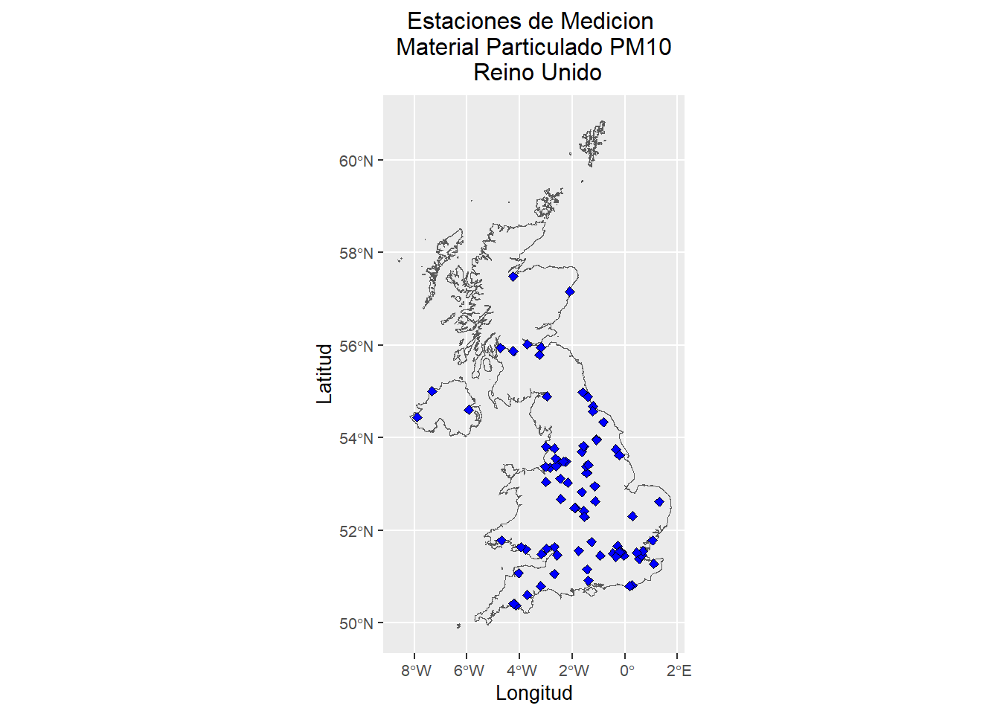
proj4string(PolutionUK)[1] "+proj=longlat +datum=WGS84 +no_defs"#OSGB 1936 / British National Grid
CRS.new <- CRS("+proj=tmerc +lat_0=49 +lon_0=-2 +k=0.9996012717 +x_0=400000 +y_0=-100000 +ellps=airy +units=m +no_defs +type=crs")
PolucionUK1 <- read.csv("PolucionUK1.csv")
coordinates(PolucionUK1)=c("Longitud","Latitud")
proj4string(PolucionUK1)<-CRS("+init=epsg:4326")
coordenadas<-spTransform(PolucionUK1, CRS.new)
head(coordenadas) coordinates PM10 PM2.5 sitio X Fecha
1 (394267.8, 807375.9) 7.505 5.560 Aberdeen Erroll Park NA 01/12/22
2 (322077.3, 656125.3) 4.460 3.687 Auchencorth Moss NA 01/12/22
3 (256969.6, 132649.8) 15.965 13.609 Barnstaple A39 NA 01/12/22
4 (146272.1, 529828.1) 13.173 7.967 Belfast Centre NA 01/12/22
5 (408490.7, 286516.8) 32.271 19.332 Birmingham A4540 Roadside NA 01/12/22
6 (405552.3, 287091.1) 17.717 15.020 Birmingham Ladywood NA 01/12/22Una vez transformados los datos a coordenadas planas se añaden al data frame
X<-coordinates(coordenadas)[,1]
Y<-coordinates(coordenadas)[,2]
Tabledata <- data.frame(Longitud = as.numeric(PolucionUK1$Longitud),
Latitud = as.numeric(PolucionUK1$Latitud),
Fecha=PolucionUK1$Fecha,
X = as.numeric(X),
Y = as.numeric(Y),
PM10=as.numeric(PolucionUK1$PM10),
PM2.5=as.numeric(PolucionUK1$PM2.5),
sitio=as.character(PolucionUK1$sitio))
head(Tabledata) Longitud Latitud Fecha X Y PM10 PM2.5
1 -2.094770 57.15740 01/12/22 394267.8 807375.9 7.505 5.560
2 -3.242900 55.79216 01/12/22 322077.3 656125.3 4.460 3.687
3 -4.041924 51.07479 01/12/22 256969.6 132649.8 15.965 13.609
4 -5.928833 54.59965 01/12/22 146272.1 529828.1 13.173 7.967
5 -1.874978 52.47615 01/12/22 408490.7 286516.8 32.271 19.332
6 -1.918235 52.48135 01/12/22 405552.3 287091.1 17.717 15.020
sitio
1 Aberdeen Erroll Park
2 Auchencorth Moss
3 Barnstaple A39
4 Belfast Centre
5 Birmingham A4540 Roadside
6 Birmingham LadywoodPolucionUK<-Tabledata[,4:7]
summary(PolucionUK) X Y PM10 PM2.5
Min. : 17578 Min. : 54681 Min. : 3.383 Min. : 2.173
1st Qu.:333000 1st Qu.:182075 1st Qu.:15.101 1st Qu.:12.201
Median :424735 Median :307801 Median :19.774 Median :16.404
Mean :404850 Mean :332737 Mean :20.731 Mean :16.477
3rd Qu.:476424 3rd Qu.:433252 3rd Qu.:26.389 3rd Qu.:20.747
Max. :623558 Max. :845643 Max. :39.521 Max. :30.456 par( mar= c(4,4,1,2) )
hist(PolucionUK$PM10 ,freq=T,col='blue',labels=TRUE, ylim=c(0,30),main="Distribución de material particulado PM10",
xlab="Material Particulado de 10 micrometros",
ylab="Frecuencia")
Se realiza un gráfico de dispersión para conocer la tendencia del material particulado en función de las coordenadas. Allí se puede observar que a medida que hay una relación positiva entre el material particulado PM10 y la longitud, mientras que la relación es inversa entre el PM10 y la latitud. Esta relación se mantiene para el material particulado de 5 micras.
par( mar= c(4,4,1,1) )
plot(PolucionUK, main = "Gráfico de dispersión")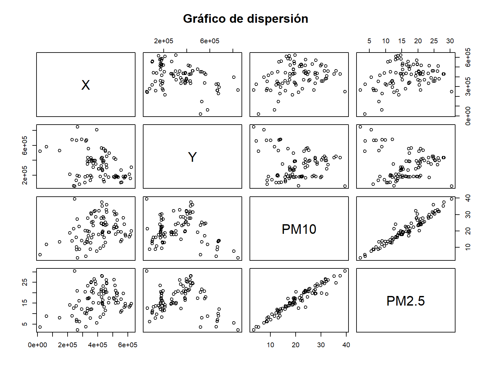
Modelos deterministicos.
Se realiza el ajuste con un modelo lineal, un modelo de segundo orden, y un modelo donde se tiene en cuenta la interacción de las coordenadas, buscando que el modelo seleccionado permita tener el menor error cuadrático posible:
Modelo Lineal
mod1 <- lm(PM10 ~ X + Y, data = PolucionUK)
summary(mod1)
Call:
lm(formula = PM10 ~ X + Y, data = PolucionUK)
Residuals:
Min 1Q Median 3Q Max
-14.368 -5.356 -1.236 5.223 21.675
Coefficients:
Estimate Std. Error t value Pr(>|t|)
(Intercept) 1.299e+01 4.060e+00 3.199 0.00196 **
X 1.980e-05 7.580e-06 2.612 0.01068 *
Y -8.162e-07 4.936e-06 -0.165 0.86906
---
Signif. codes: 0 '***' 0.001 '**' 0.01 '*' 0.05 '.' 0.1 ' ' 1
Residual standard error: 7.704 on 83 degrees of freedom
Multiple R-squared: 0.0906, Adjusted R-squared: 0.06869
F-statistic: 4.135 on 2 and 83 DF, p-value: 0.01942anova(mod1)Analysis of Variance Table
Response: PM10
Df Sum Sq Mean Sq F value Pr(>F)
X 1 489.1 489.14 8.2419 0.005193 **
Y 1 1.6 1.62 0.0273 0.869055
Residuals 83 4925.9 59.35
---
Signif. codes: 0 '***' 0.001 '**' 0.01 '*' 0.05 '.' 0.1 ' ' 1Modelo de Segundo Orden
mod2 <- lm(PM10 ~ X + Y +
I(X^2) + I(Y^2)+
I(X*Y), data = PolucionUK)
summary(mod2)
Call:
lm(formula = PM10 ~ X + Y + I(X^2) + I(Y^2) + I(X * Y), data = PolucionUK)
Residuals:
Min 1Q Median 3Q Max
-11.2172 -4.2853 -0.7554 4.2047 22.8526
Coefficients:
Estimate Std. Error t value Pr(>|t|)
(Intercept) 2.322e+01 1.055e+01 2.200 0.03068 *
X -4.127e-05 4.335e-05 -0.952 0.34388
Y 1.905e-05 2.416e-05 0.788 0.43277
I(X^2) 1.706e-11 4.349e-11 0.392 0.69591
I(Y^2) -8.652e-11 1.852e-11 -4.673 1.18e-05 ***
I(X * Y) 1.359e-10 4.525e-11 3.004 0.00356 **
---
Signif. codes: 0 '***' 0.001 '**' 0.01 '*' 0.05 '.' 0.1 ' ' 1
Residual standard error: 6.172 on 80 degrees of freedom
Multiple R-squared: 0.4374, Adjusted R-squared: 0.4023
F-statistic: 12.44 on 5 and 80 DF, p-value: 6.136e-09anova(mod2)Analysis of Variance Table
Response: PM10
Df Sum Sq Mean Sq F value Pr(>F)
X 1 489.14 489.14 12.8417 0.0005809 ***
Y 1 1.62 1.62 0.0426 0.8369867
I(X^2) 1 288.38 288.38 7.5711 0.0073344 **
I(Y^2) 1 1246.60 1246.60 32.7277 1.769e-07 ***
I(X * Y) 1 343.72 343.72 9.0239 0.0035564 **
Residuals 80 3047.20 38.09
---
Signif. codes: 0 '***' 0.001 '**' 0.01 '*' 0.05 '.' 0.1 ' ' 1Así mismo se realiza el análisis de la gráfica de residuales contra las coordenadas para verificar cual es el modelo más adecuado para modelar la media.
Gráfico de Residuales
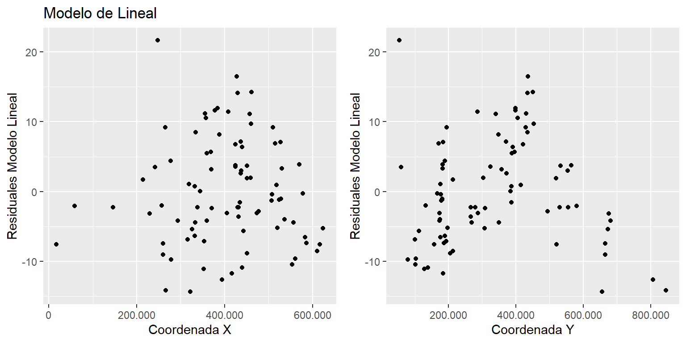
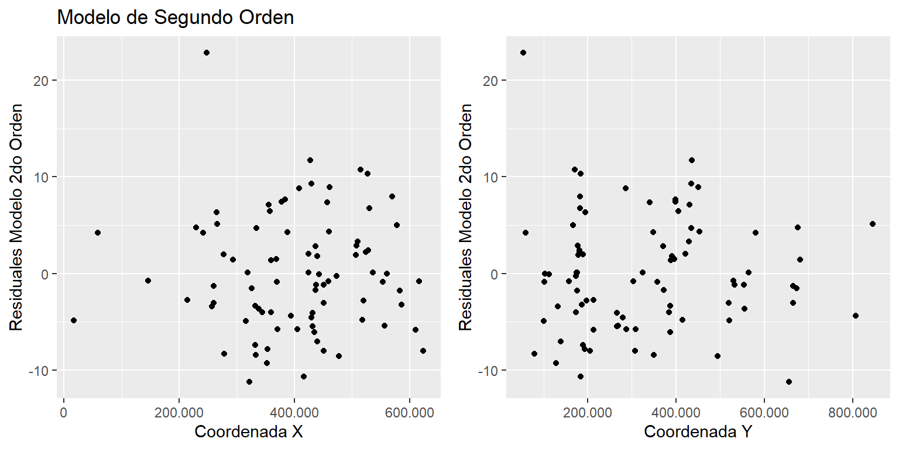
Con base en los resultados obtenidos de la gráfica de residuales, se establece que un modelo lineal podría ser el mas apropiado para realizar el modelado de la media
Identificación de Datos atípicos
Con el modelo de segundo orden se identifican los posibles datos atípicos e influenciables, mediante los residuales estudentizados.
Aquí se identifican las concentraciones de material particulado con residuales estudentizados mayores a dos:
Atipicos PM10 X Y Longitud Latitud Res Res.Est
41 37.601 427886.3 436072.98 -1.576361 53.81997 16.49862 2.210771
61 39.521 247671.3 54681.07 -4.142361 50.37167 21.67541 3.093578Esto se confirma mediante los siguientes gráficos.
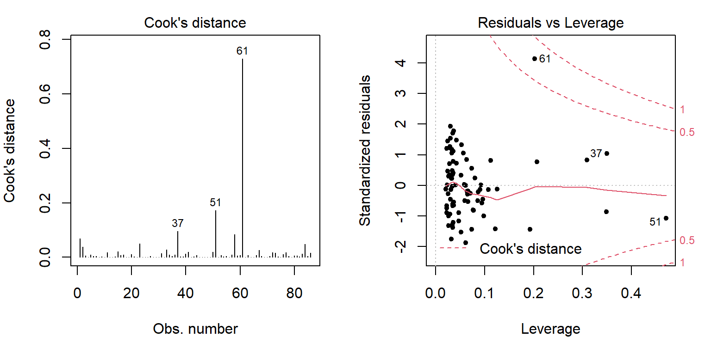
Esto confirma que el dato 61, con una concentración de 39.5 \(\mu\)g\(\cdot\)m\(^{-3}\) con coordenadas 50.3 de latitud y -4.14 de longitud (X=247671.3, Y=54681.07) como un dato atípico, sin embargo no esta determinado como un leverage ya que se encuentra dentro de la zona de distancia de cook establecida.
Estimación del variograma empírico
Mediante el paquete geoR se realiza la estimacion del semivariograma empírico, inicialmente se realiza la conversión a datos geoestadísticos y el análisis para los datos:
sin remoción de tendencia
con remoción de la tendencia mediante un modelo de primer orden
Remocion de la tendencia mediante un modelo de primer orden.
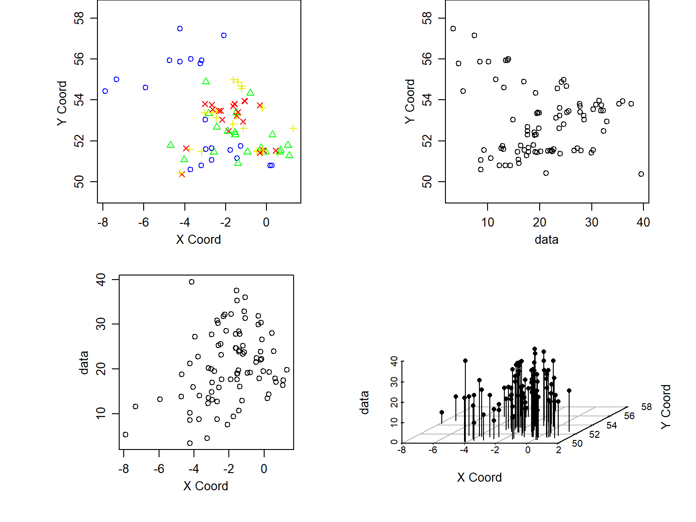
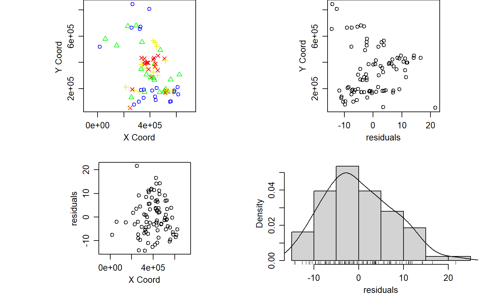
Se confirma el dato atípico en las coordenadas estipuladas. Posteriormente se realiza la estimación de los variogramas omnidireccionales empíricos, incluyendo un modelo adicional en el que se tienen en cuenta los datos atípicos:
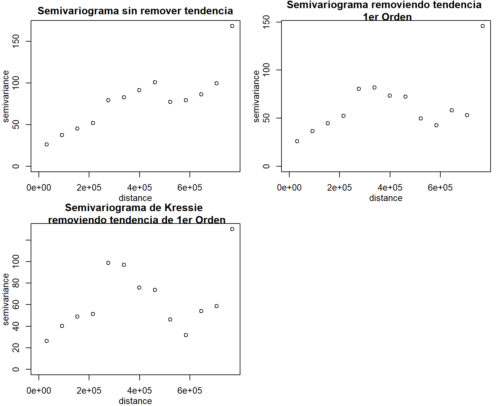
Debido a que se contienen datos atípicos se calcula semivarianza espacial mediante el semivariograma resistente a atipicos propuesto por kressie utilizando una correccion de tendencia de primer orden
Selección del semivariograma
Debido a que los últimos pares del semivariograma resistente a datos atipicos generan un comportamiento no adecuado se tienen en cuenta en el modelo, Inicialmente se plantea generar un semivariograma teniendo en cuenta pares de datos mayores a 70 datos, debido a que con esta cantidad de datos tambien se presenta un comportamiento erratico se acorta la distancia inicialmente a 4, y por ultimo a 3.3 donde la semivarianza se estabiliza.
Code
variog4<-variog(PolucionUKG,
trend = "1st",
max.dist = 701000,
messages = F)
variog5<-variog(PolucionUKG,
trend = "1st",
max.dist = 500000,
messages = F)
variog6<-variog(PolucionUKG,
trend = "1st",
estimator.type = "modulus",
max.dist = 701000,
messages = F)
variog7<-variog(PolucionUKG,
trend = "1st",
estimator.type = "modulus",
max.dist = 500000,
pairs.min = 70,
messages = F)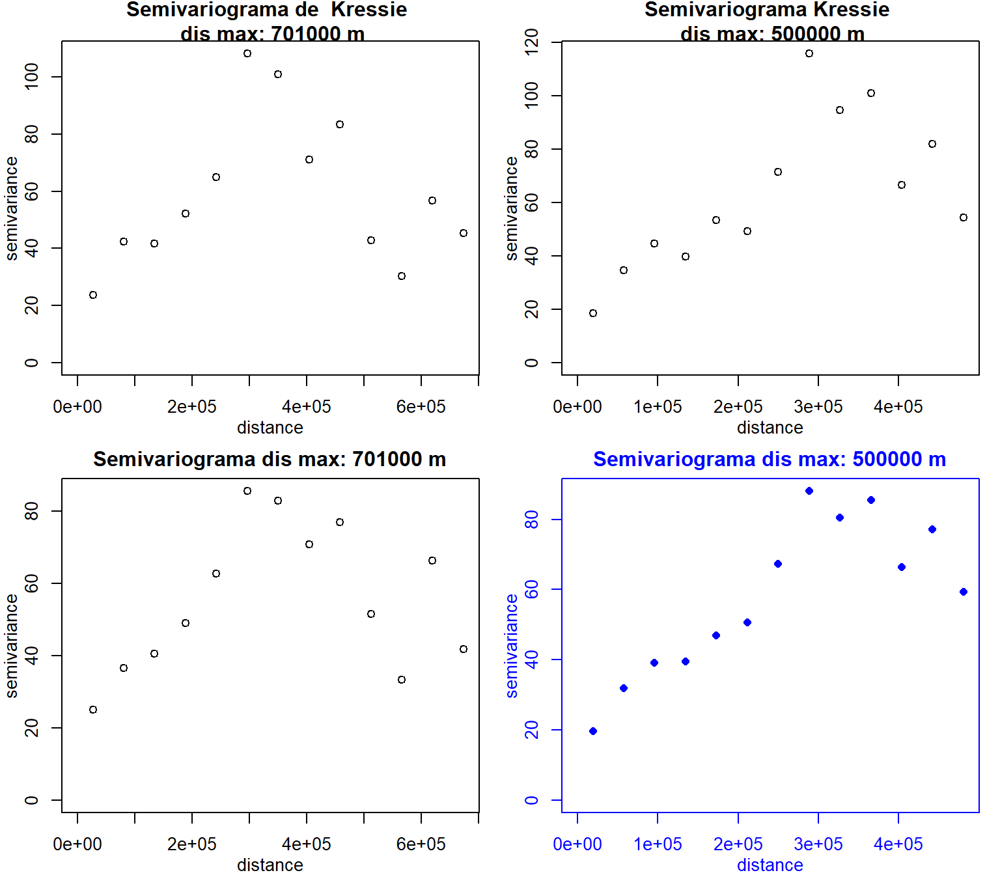
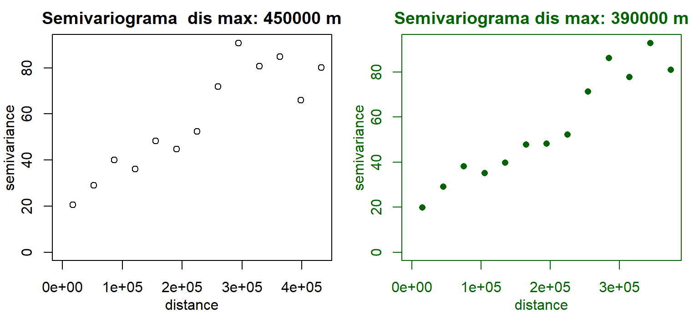
variog7$u [1] 14988.87 44966.61 74944.35 104922.09 134899.82 164877.56 194855.30
[8] 224833.04 254810.78 284788.52 314766.26 344743.99 374721.73variog7$n [1] 89 165 214 242 246 285 241 270 322 316 237 175 166variog7$v [1] 19.84786 29.12574 38.22499 35.20849 39.69758 47.71800 48.19067 52.23369
[9] 71.28508 86.25659 77.79354 92.86938 80.94812Estimacion del Variograma teorico
Para la estimación del semivariancia y los parámetros iniciales se utiliza la herramienta eyefit a partir de esta se determina que existen 3 posibles modelos que se ajustan al semivariograma establecido previamente:
eyefit(variog7)
# cov.model sigmasq phi tausq kappa kappa2 practicalRange
# 1 wave 62.75 91148.53 17.57 <NA> <NA> 272666.856463506
# 2 cubic 70.28 567146.41 20.08 <NA> <NA> 567146.41
# 1 cauchy 75.3 131658.99 22.59 0.68 <NA> 1184193.03934269
# 3 gaussian 62.75 202552.29 20.08 <NA> <NA> 350581.2269701891. Modelo Wave
\[\begin{array}{c}\gamma(h)=\tau^{2}+\sigma^{2}\left[1-\exp \left(-3\left(\frac{\|h\|}{a}\right)^{\lambda}\right)\right] \\ 0 \leq \lambda \leq 2\end{array} \]
Métodos Cuadrados Ordinarios
Métodos Cuadrados Ponderados por el numero de pares de datos
Métodos Cuadrados Ponderados de Cressie
Método por Máxima Verosimilitud
Método por Máxima Verosimilitud Restringida
2. Modelo Cubico
Métodos Cuadrados Ordinarios
Métodos Cuadrados Ponderados por el numero de pares de datos
Métodos Cuadrados Ponderados de Cressie
Método por Máxima Verosimilitud
Método por Máxima Verosimilitud Restringida
3. Modelo Cauchy
\[ \]
Métodos Cuadrados Ordinarios
Métodos Cuadrados Ponderados por el numero de pares de datos
Métodos Cuadrados Ponderados de Cressie
Método por Máxima Verosimilitud
Método por Máxima Verosimilitud Restringida
4. Modelo Gaussiano
\[ \]
Métodos Cuadrados Ordinarios
Métodos Cuadrados Ponderados por el numero de pares de datos
Métodos Cuadrados Ponderados de Cressie
Método por Máxima Verosimilitud
Método por Máxima Verosimilitud Restringida
Graficas Modelos
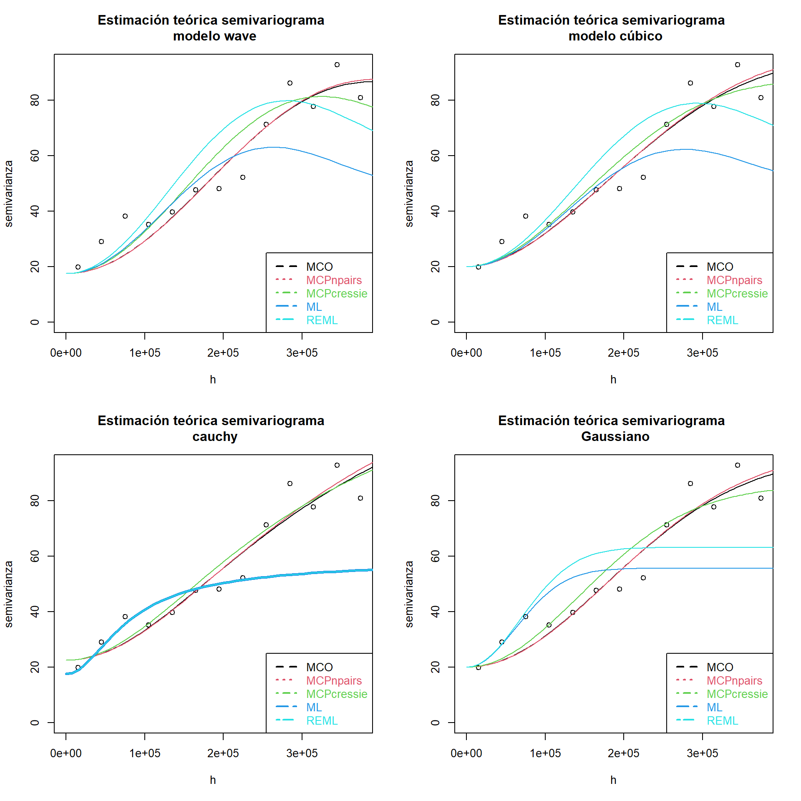
Kriging
Validacion Cruzada
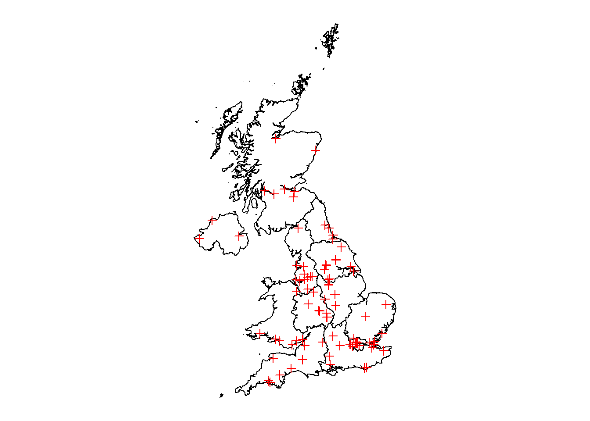
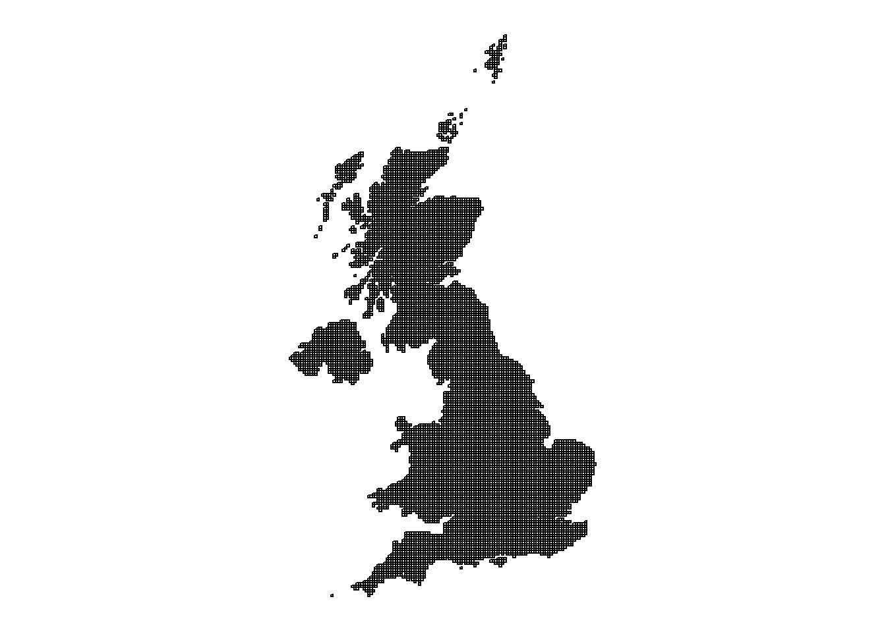
GisINfo1 and GisINfo2to take UKshape
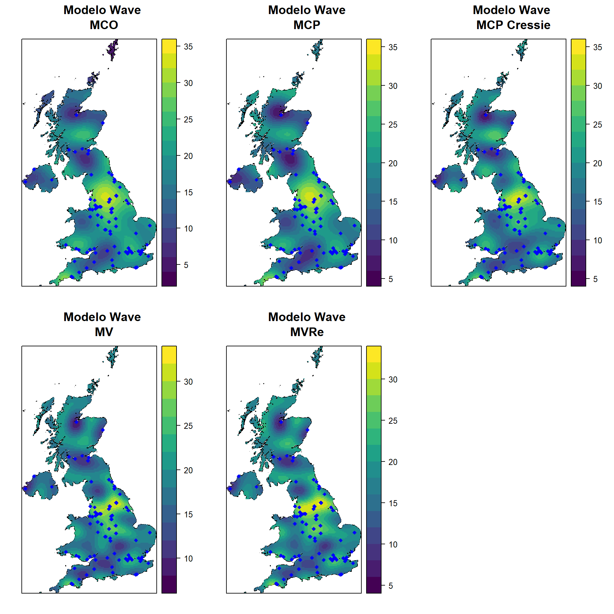
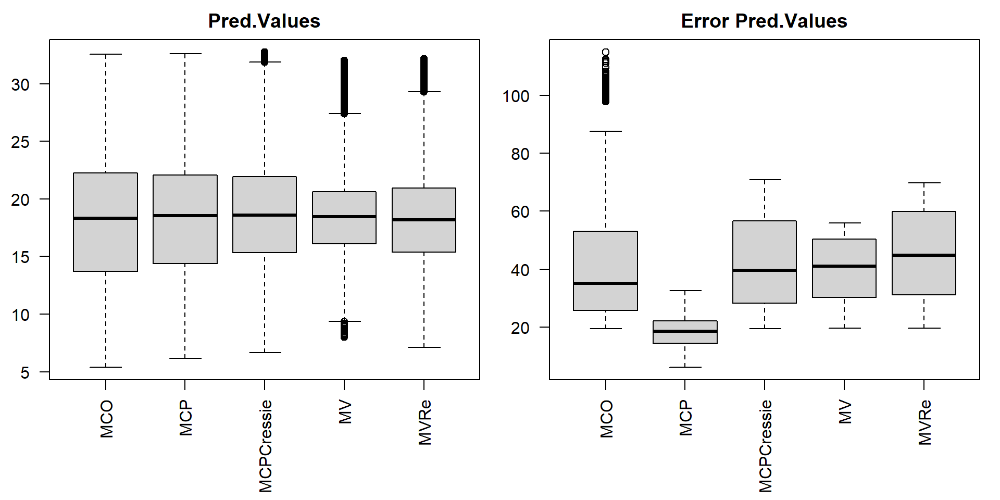